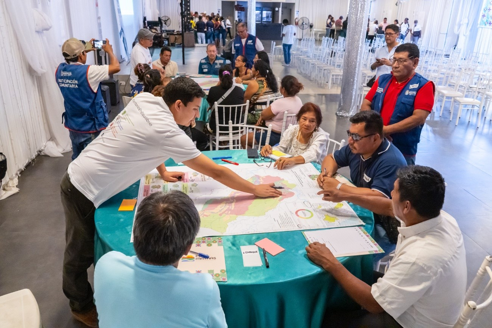
23 Marzo 2026
Buscamos construir el futuro de Maynas, tomando como base nuestro territorio y su potencial. Con una visión clara de largo plazo, transformaremos la provincia en un modelo de desarrollo sostenible que respete y potencie lo que nos hace únicos: nuestra identidad, nuestras tradiciones y nuestro entorno natural. A través de este esfuerzo, trazaremos todos juntos el camino hacia un futuro más ordenado y próspero.
- Conocer el proceso de planificación territorial.
- Acceder a la información espacial que se genera.
- Seguir de cerca la articulación y elaboración de los instrumentos de gestión.
- Participar del proceso de construcción de cada uno de ellos.
¿Qué es un Plan y cuáles son sus alcances?
Leer más¿Cuáles son los espacios para participar de la elaboración de lod Planes?
Leer más¿Qué hemos estado haciendo y qué está por venir?
Leer más¿Qué es la Consulta Pública del PAT Maynas?
Leer másLa Municipalidad Provincial de Maynas, a través de la Gerencia de Acondicionamiento Territorial y en convenio con el Gobierno Regional de Loreto, ha creado Plan Maynas, una estrategia integral e intergubernamental para transformar la gestión de nuestro territorio, al 2045, bajo un enfoque sostenible y participativo.
Este proyecto no solo busca desarrollar planes, sino generar un cambio estructural en la forma en que concebimos nuestra provincia. Su objetivo es sentar las bases para una planificación territorial que se implemente y genere un impacto real, garantizando el bienestar de las generaciones presentes y futuras.
Para lograrlo, Plan Maynas:
Para consolidar este cambio, Plan Maynas desarrolla tres herramientas fundamentales:
TRES PILARES DE TRABAJO
El desarrollo territorial de Maynas no es solo una cuestión técnica, sino un esfuerzo colectivo que debe construirse desde la participación, la normativa adecuada y la inversión estratégica. Por ello, Plan Maynas se basa en tres pilares fundamentales:
Plan Maynas desarrolla tres herramientas fundamentales:
Plan de Acondicionamiento Territorial de Maynas al 2045 (PAT Maynas): Definirá cómo habitamos e integramos el desarrollo de nuestros 11 distritos sin dañar el entorno natural. Esta gestión del territorio permite una provisión equitativa de servicios entre las áreas urbanas y rurales.
Plan de Desarrollo Metropolitano de Iquitos al 2045 (PDM Iquitos): Ordenará el crecimiento de Iquitos, promoviendo un modelo de ciudad amazónica sostenible. Define cómo se usarán los suelos en el futuro, cómo se estructurarán las vías y servicios, y cómo protegeremos el territorio frente a riesgos y peligros. Todo esto se hace a través de una zonificación clara y normas que aseguran un desarrollo equilibrado y sostenible.*En convenio con el Instituto Metropolitano de Planificación de la Municipalidad Metropolitana de Lima.
Plan Maestro de la Zona Urbano Monumental de Iquitos al 2045 (PMZUM Iquitos): Protegerá nuestro patrimonio histórico y lo integrará al desarrollo de la ciudad. Establece cómo organizar, zonificar y regular este espacio único, asegurando su conservación mientras se impulsa su proyección de manera ordenada y respetuosa de su valor histórico y cultural.
Creemos que la planificación territorial no es un proceso unilateral, sino una construcción colectiva. Por eso, promovemos un modelo de trabajo articulado que conecta a instituciones, organizaciones y ciudadanía en un mismo propósito: construir el futuro de nuestro territorio respetando su identidad y legado. La participación de todas y todos es el núcleo de nuestro enfoque. Apostamos por una intervención activa, concertada y cooperativa en cada etapa: desde la toma de decisiones hasta la coproducción de los planes territoriales, la gestión del territorio, el monitoreo y la rendición de cuentas. Queremos que cada voz sea escuchada y que cada acción tenga un impacto positivo y tangible en el futuro que estamos creando juntos. Invitamos a instituciones, organizaciones y ciudadanía en general a sumarse a este proceso de construcción conjunta. El futuro de Maynas se diseña mejor cuando lo hacemos juntos. Por eso, contamos con cinco espacios de participación:.
Es la instancia oficial de coordinación y consulta entre el gobierno provincial, las municipalidades distritales y la sociedad civil. Como máxima instancia de concertación local, su propósito es promover y fortalecer el diálogo y la gobernanza.
Es un espacio de participación activa y concertación de actores locales de los tres niveles de gobierno que residen en Iquitos y conocen el territorio de Maynas. Su propósito es articular esfuerzos para el desarrollo territorial sostenible de la provincia.
Es un espacio de articulación con el gobierno nacional para establecer coordinaciones estratégicas multisectoriales que integren la planificación institucional con la planificación y gestión territorial.
Estará conformado por representantes de colegios profesionales, organismos internacionales, la academia y expertos temáticos (incluyendo representantes de la comunidad, asociaciones y pueblos indígenas), con el objetivo de aportar al desarrollo de los planes territoriales.
Espacio de participación ciudadana activa y permanente, donde se recogerán aportes para la elaboración de los tres instrumentos de gestión territorial, fomentando una retroalimentación continua entre especialistas y la ciudadanía..
¿QUIÉNES HACEMOS PLAN MAYNAS?
El desarrollo de Plan Maynas no es el trabajo de una sola institución, sino el resultado de la acción conjunta de múltiples actores.
Gobiernos locales, regionales y nacionales, instituciones técnicas y académicas, organizaciones de la sociedad civil, pueblos indígenas y ciudadanía en general convergen en un proceso de planificación territorial que busca ser participativo, coordinado y efectivo.
Cada uno de estos actores aporta desde su conocimiento y experiencia, asegurando que la planificación refleje la diversidad y complejidad del territorio de Maynas. Desde la instancia oficial de concertación local hasta los espacios de articulación intergubernamental, el objetivo es construir un modelo de gestión territorial que integre las distintas voces, poniendo en valor la riqueza cultural y natural de la Amazonía.
Así, venimos construyendo un nuevo Maynas junto a:
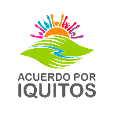
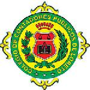
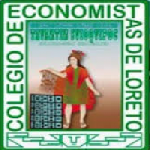
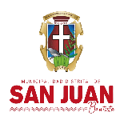
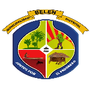
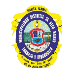
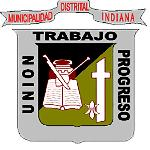
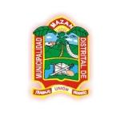
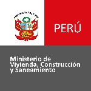
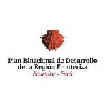
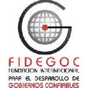
Plan de Desarrollo Metropolitano de Iquitos (PDM Iquitos)
Así, venimos construyendo un nuevo Maynas junto a:
Plan de Acondicionamiento Territorial (PAT Maynas)
Últimas novedades sobre nuestros proyectos y actividades.

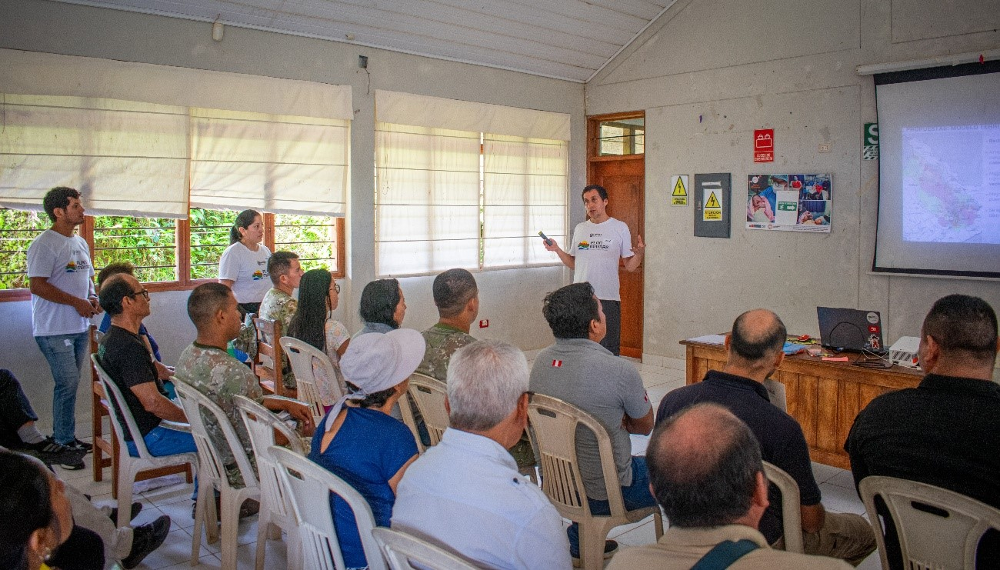
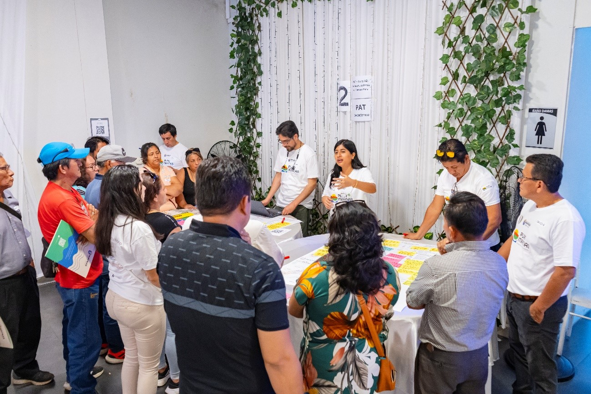
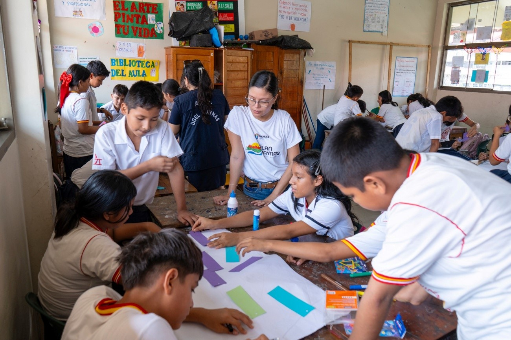
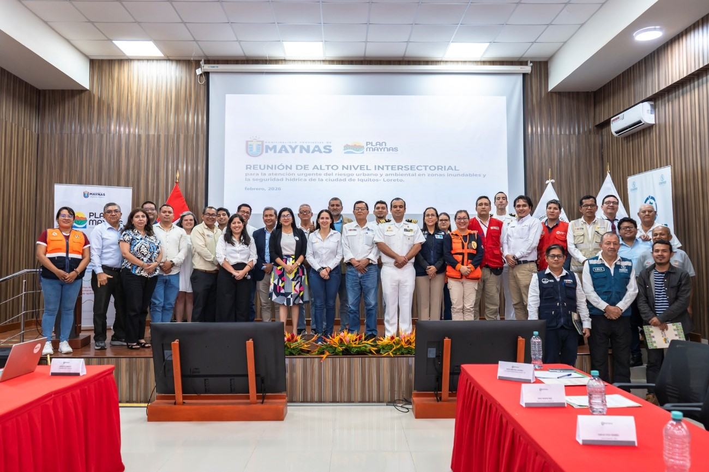
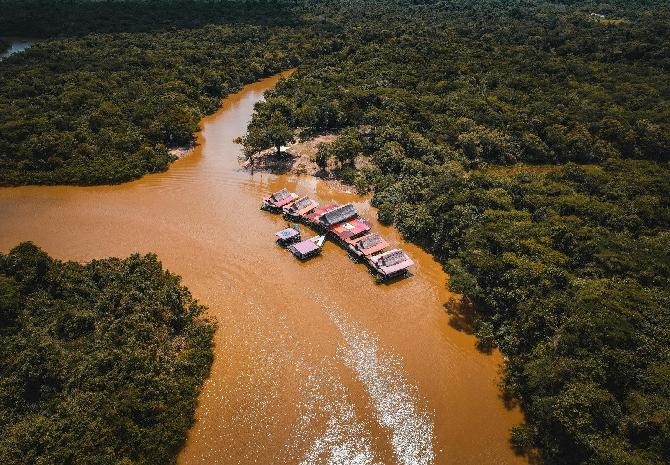
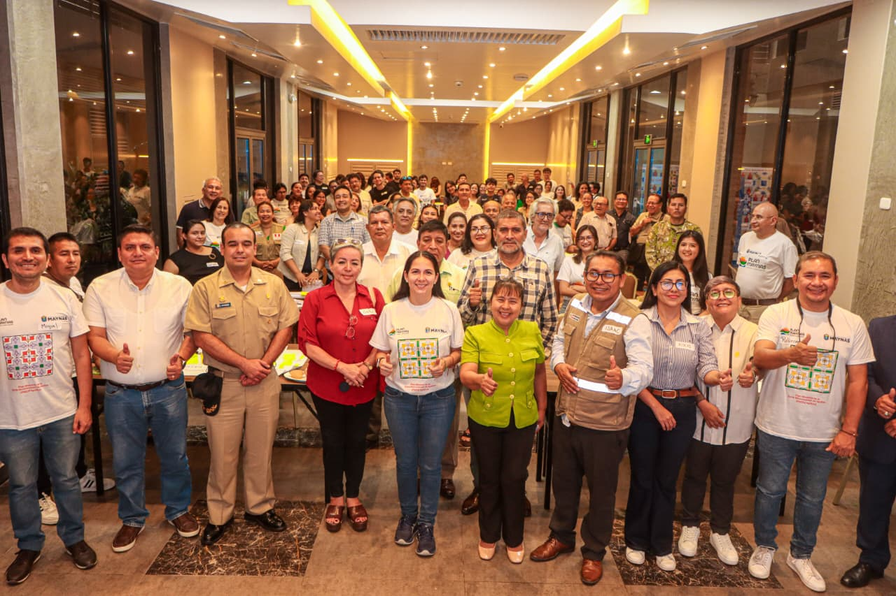
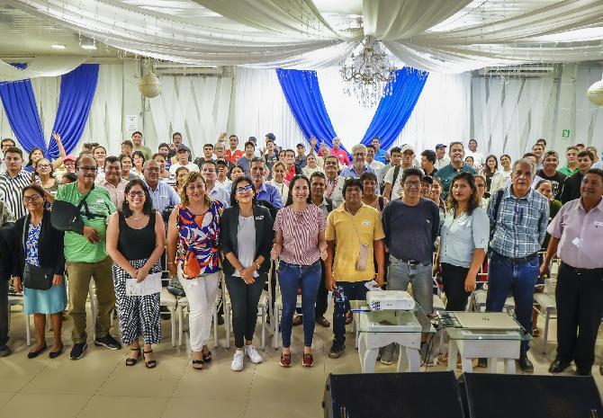
El Plan de Desarrollo Metropolitano de la Ciudad de Iquitos 2025 – 2045 – PDM Iquitos 2045, elaborado por el Instituto Metropolitano de Planificación (IMP) y gestionado por la estrategia Plan Maynas | Amazonía y Ciudad Sostenible de la Municipalidad Provincial de Maynas, ha sido aprobado a través de la ORDENANZA MUNICIPAL N° 005-2026-A-MPM.
El PDM IQUITOS 2045, constituye el instrumento técnico normativo que servirá para orientar el desarrollo urbano sostenible de los cinco (05) distritos que conforman el Área Metropolitana de Iquitos: Punchana, Belén, San Juan Bautista, Iquitos e Indiana.
Este plan no solo define el futuro urbano de Iquitos Metropolitana, sino que sella un compromiso colectivo por una ciudad segura, resiliente y sostenible.
Del 20 de febrero al 20 de marzo del 2026
Hemos implementado espacios físicos y digitales para recoger los aportes y comentarios de la ciudadanía.
Esta es la oportunidad para planificar juntos el futuro de Maynas. Tu opinión contribuye a la construcción de la provincia que queremos hacia el 2045.
- Acercándote al local Municipal de tu distrito e ingresando tus comentarios
Horarios de atención: de lunes a viernes de 8:00 am – 2:00 pm
- Asistiendo a las Audiencias Públicas
- 2 de marzo: Francisco de Orellana (Las Amazonas)
- 2 de marzo: Cabo Pantoja (Torres Causana)
- 3 de marzo: Mazán
- 4 de marzo: Indiana
- 5 de marzo: Tamshiyacu (Fernando Lores)
- 5 de marzo: Santa Clotilde (Napo)
- 6 de marzo: Santa María de Alto Nanay
- 14 de marzo: Dirigido a los distritos de Iquitos, Belén, Punchana y San Juan
- Revisa y descarga el documento oficial, ingresando a la carpeta digital:
Descargar el Documento
- Deja tus aportes ingresando al visor digital:
Ingresa al visor del PAT maynas
- Conoce los resultados de la Consulta Pública realizada del 20 de febrero al 20 de marzo del 2026
Resultados de la Consulta Pública PAT
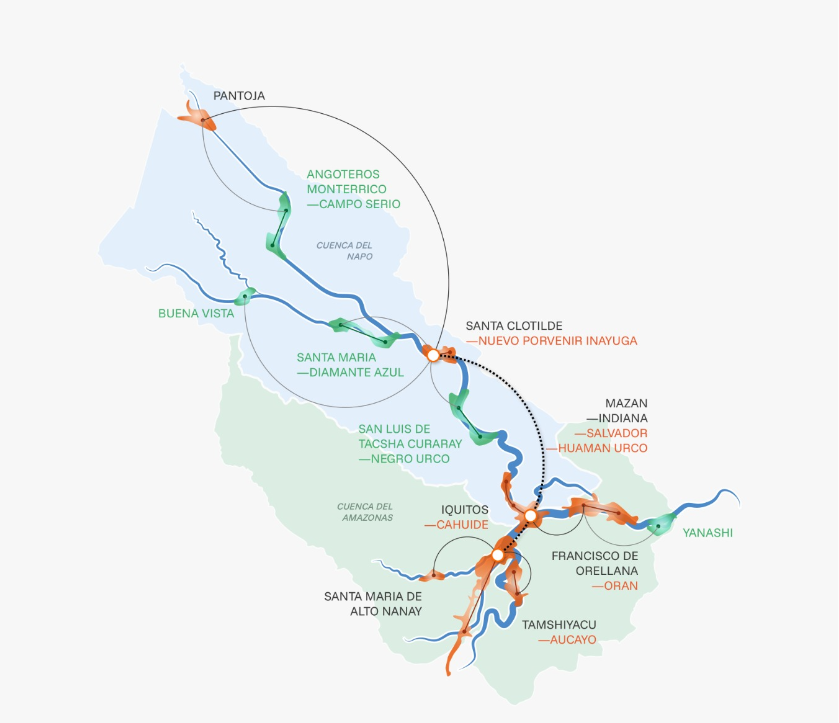
La Municipalidad Provincial de Maynas, a través de su estrategia Plan Maynas | Amazonía y Ciudad Sostenible, presenta una muestra virtual que pone en el centro las voces, miradas y sueños de niñas, niños y adolescentes, reconociéndolos como protagonistas del futuro urbano de Iquitos Metropolitano. Esta muestra reúne dibujos y collages elaborados con material reciclado por estudiantes de los niveles inicial, primaria y secundaria de la IEPSM N.° 601061 Sachachorro y del Colegio Mariscal Óscar R. Benavides (MORB), reflejando una diversidad de expresiones y sensibilidades propias del territorio amazónico
La iniciativa fue posible gracias al trabajo articulado con la Dirección Desconcentrada de Cultura de Loreto, la UGEL Maynas y Acuerdo por Iquitos, y se concibió como un espacio de participación intercultural, donde la niñez y adolescencia pudieron expresar, desde su identidad, su relación con el entorno y su experiencia cotidiana, cómo viven la ciudad, cómo sienten los espacios públicos y, sobre todo, qué ciudad imaginan y desean para el futuro.
Las piezas expuestas son el resultado de talleres creativos realizados el 2 de diciembre de 2025 en sus respectivas instituciones educativas. En estos espacios, niñas, niños y adolescentes compartieron sus percepciones sobre habitar un territorio amazónico urbano e inundable, donde la relación con el agua, el bosque y la naturaleza es permanente y forma parte de su vida diaria. Desde esa vivencia, sus obras expresan el anhelo de una ciudad más verde, segura, inclusiva y ordenada, que valore la diversidad cultural, cuide su entorno natural y se adapte de manera armónica a las dinámicas propias de la Amazonía.
Las obras fueron exhibidas del 4 al 11 de diciembre de 2025 en el Museo Amazónico de Iquitos, espacio simbólico que reforzó el diálogo entre cultura, territorio y futuro. Durante la inauguración de la muestra, las y los escolares tuvieron la oportunidad de presentar sus trabajos directamente ante las autoridades de la Municipalidad Provincial de Maynas, entre ellas la Primera Regidora, Dra. Paola Bances, y la Gerente de Acondicionamiento Territorial, Dra. Carmen del Rocío Catunta.
En ese espacio de diálogo sincero y respetuoso, niñas, niños y adolescentes compartieron sus propuestas, preocupaciones y aspiraciones para la ciudad al 2045, reafirmando un mensaje clave: escuchar a la niñez y adolescencia no es solo un acto simbólico, sino una apuesta por el futuro, porque en sus ideas, emociones y visiones se están formando las ciudadanas y ciudadanos que tomarán decisiones por Iquitos en las próximas décadas.


Equipo Central:
Socios: